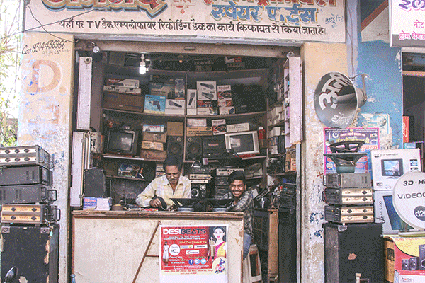
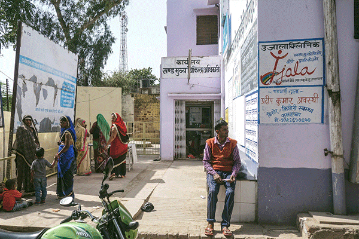
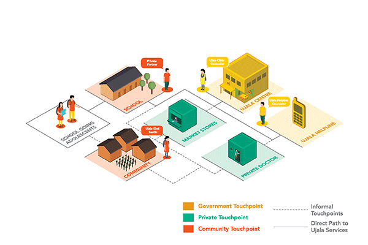
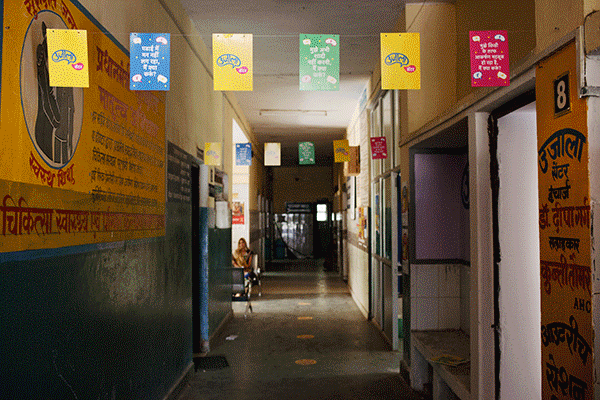
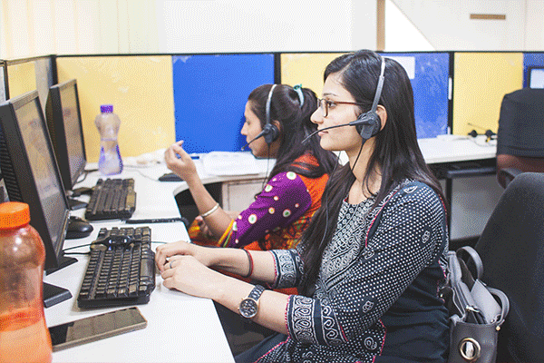
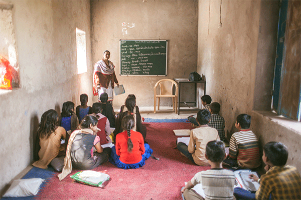
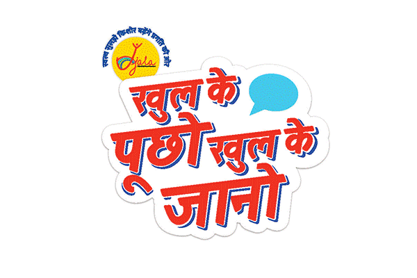

Employer: Quicksand | Client: IPE Global | Role: Project Lead (Research + Strategy)
The project was aimed at reducing early pregnancies amongst adolescents in Rajasthan, India, by improving the Sexual and Reproductive Health (SRH) Knowledge Attitude and Practices (KAPs) of adolescents using a Human Centered Design approach. A core requisite was to build on the state government's existing program (RKSK) which had already set up a couple touchpoints such as counseling clinics and community outreach. The project was commissioned by IPE Global and a subset of a larger project funded by CIFF. On ground we worked very closely with THE YP foundation and Manjari Foundation who do amazing work (including food and PPE supply during Covid).
Initial Insights
Using a cyclical approach pairing research and prototyping, the team worked across program touch points to slowly refine the interventions and make them more adolescent friendly. Some of the initial discussions with adolescents, parents, and other community members indicated that adolescents have very few safe spaces in the community to freely express themselves, that adolescents had little accurate knowledge about SRH issues although high awareness of sexual activity around them.
We had taken for granted the dissemination of SRH-related information should be made available in a discrete manner (like IDEO's Diva Centers) but we quickly realized the family and community dynamics were very different in our given context and would require the parent buy-in. Beyond the initial concerns around broaching the topic, the communities we worked with agreed with the importance of discussing SRH topics, but did not necessarily know how to address it themselves.
Regarding the existing service, named Ujala, we quickly realized it was well intentioned but lacked, clarity of message in its branding and consistency in its execution across touch points.

The project took place in Dholpur, a small district in the south of Rajasthan, India.

Existing Ujala services were hard to find and not always welcoming.
Multi-platform Solution
A team of ten designers and researchers brought the final solution to a pilot-ready intervention plan and created multiple sets of prototypes. One set of solutions revisited existing touch points: improving the counselor's ability to inform adolescents in a meaningful way in-clinic or when visiting angawadis (government sponsored child care center) and the 108 emergency helpline experience. New touch points, namely schools and key stakeholders in the markets (chemists, private doctors) were involved to create a holistic presence. A new SRH curriculum was devised and tested for schools, paired with clinic field trips, while market touch points were given posters and other branded material on prioritized topics like STDs or contraceptives. Lastly the new set of services was captured under a new campaign made identifiable with “Khulke pucho, Khulke jaano” (Ask openly, Know openly) as the call to action.

The interventions built on the existing RKSK program.
1 | Ujala Center Experience
Making the Ujala center more welcoming to adolescents and reframing its image from that of a clinic to that of a safe counseling environment (for SRH-related or other concerns). This was paired with improved way-finding within the hospital and the creation of easy to use games and activities.
During testing, it became clear that to fundamentally improve the experience, the counselors themselves would need more sensitization as many refused to bring up topics like STDs because they felt uncomfortable speaking about sex. A series of trainings and a Whatsapp group were created to that end.

Although the space and wayfinding were revisited, counselor training became a key need.
2 | 108 Helpline Experience
The original phone counseling experience was less than optimal. It was only accessible by calling the medical emergency number (ambulance dispatch) which would then be rerouted to the SRH counselors. These counselors felt uncomfortable broaching the topics as they themselves were only two young graduates stationed in the heart of the emergency call center. This meant very few calls got to them, and when they did, their ability to answer them were drastically hindered due to multiple logistical constraints.
After many iterations and institutional hurdles, the team decided to focus on better marketing the availability of helpline and on the counselors' ability to answer questions. They were both given the the chance to attend an iCall training program and we cocreated with them and TARSHI an interactive, offline, ready-reckoner to guide them through answering callers' queries.

The helpline was revisited by working with providers and adolescents to fine tune the experience.
3 | School Program
The school programs were organized (and are still running two years later) to reinforce the foundational knowledge and awareness of adolescents regarding SRH topics and Ujala services. The curriculum and activities were developed, piloted, and run by the YP Foundation.

School was the only controlled environment to develop in-depth understandings of SRH topics.
4 | Ujala Rebrand
In order to call attention to the range of new efforts, a campaign was created to reimagine the Ujala brand. The design team informed the strategy, visuals, tone, and messaging for Ujala services to make them exciting and aspirational for adolescents.
The brand cut across outreach activities, support systems like chemists and schools, counseling spaces as well as mass media touch points to create a unified identity for Ujala and its offerings. The campaign Khulke Pucho, Khulke Jaano was later adapted and rolled out in Madhya Pradesh, India by the Clinton Health Initiative.

The brand was developed using stories and questions directly taken from our FGDs.
Notes on the methodology
The project took place over a year from start to finish, halved into two phases. In the first, the team members familiarized themselves with the context ending in a large ideation session with various development stakeholders (and potential partners) and the second in which the design teams refined the interventions and got them ready to be piloted by local partners.
The focus of the first visit was twofold: getting a sense of the stories and contexts of peri-urban lifestyles and aspirations of adolescents living in Dholpur. The other was to better understand Ujala centers and map the ecosystems they exist within: hospitals, ASHA workers (community healthcare workers), chemists, market shops, existing government campaigns. During research sessions we used simple generative exercises like collaging or card sorts to collect stories around personal aspirations paired with a mix of focus group discussions and in-depth interviews with key stakeholders. Some simple sacrificial concepts were brought as campaign poster prototypes to also start building a foundational understanding of visual language and information clarity.
The following visits were focused on prototype testing and refinement. Each team (the verticals were developed in parallel by different designers) tried their own tools by role-playing helpline calls and testing the actual service, and using question boxes to better understand the adolescents' concerns around SRH topics.